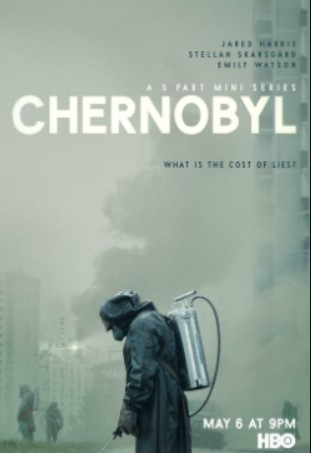

League of Legends: Arcane is an animated series that blends stunning visuals, compelling characters, and a deep, emotionally charged story. Set in the world of the popular League of Legends universe, Arcane stands out for its mature narrative and exploration of complex themes, moving far beyond the typical action-packed game adaptations. At the heart of the story are the contrasting cities of Piltover and Zaun, which are divided by wealth and power. This disparity is at the core of the show’s conflict, as it explores the tensions between the privileged and the oppressed. The series focuses on the origin stories of characters like Vi and Jinx, showing their transformation from childhood friends to bitter enemies, driven apart by circumstance, tragedy, and the world around them.
What makes Arcane so gripping is its deep dive into the characters’ emotional journeys. Vi, a fierce and determined protector, and Jinx, a troubled and chaotic figure, are both compelling in their own right. The show doesn’t just rely on action and spectacle — it takes its time to explore their motivations, their struggles, and the events that shaped them. The animators use a breathtaking art style, blending 2D and 3D animation to create a visually stunning world that reflects the show’s tone perfectly. The visual experience itself adds a layer of depth to the story, with the animation capturing the gritty, steampunk vibe of Zaun and the more polished, sleek environment of Piltover.
Arcane also touches on several important themes, such as social inequality, the effects of trauma, and the devastating consequences of unchecked ambition. The show skillfully explores how the power dynamics between the two cities lead to exploitation, violence, and conflict. It also shows how the pursuit of progress — in this case, through the creation of Hextech, a powerful new technology — can have dangerous, unintended consequences. The personal journeys of Vi and Jinx are mirrored by the larger societal struggles, creating a narrative that is both intimate and grand in scale. Ultimately, Arcane offers a fresh take on the League of Legends universe, making it accessible even for those who aren’t familiar with the game, while delivering an emotionally rich and visually captivating experience that explores the complexities of human nature, society, and the impact of technology on both.
 HBO’s Chernobyl is a haunting and intense depiction of one of the most catastrophic nuclear disasters in history. The show is masterfully crafted, blending historical accuracy with a gripping narrative that makes the events feel both personal and monumental. Chernobyl doesn’t just focus on the technical failures that led to the disaster but also delves deep into the human cost of the tragedy. It portrays the psychological and physical toll on those who lived through it, from the workers at the plant to the firefighters who risked their lives to contain the radiation. The way the show presents the failure of authority and the cover-up of the truth is deeply chilling. It reflects on the broader implications of government secrecy and the dangers of ignoring scientific expertise for political or ideological reasons.
The performances in Chernobyl are extraordinary, especially the portrayals of the key figures involved, such as Valery Legasov, played by Jared Harris, whose character becomes the voice of truth against the backdrop of corruption. The show also emphasizes the stark reality of how those in power were more focused on saving face than saving lives, creating a tense atmosphere of dread and helplessness. One of the show’s most powerful aspects is its commitment to depicting the consequences of the disaster — the long-term health effects, the environmental devastation, and the emotional trauma faced by the people of Pripyat and beyond. Chernobyl is a sobering reminder of the fragility of human lives in the face of corporate and governmental negligence, and it highlights the importance of transparency and accountability in the face of disaster.
The show also makes a stark commentary on the disregard for human lives and the environments we inhabit, which resonates with issues of environmental destruction and the reckless pursuit of progress we continue to face today. Chernobyl transcends the specific historical event, offering universal lessons about truth, responsibility, and the devastating cost of ignoring the warnings of those who seek to protect us.
Frieren: Beyond Journey’s End is a show that has deeply resonated with me ever since I watched the first episode. I discovered it during a particularly vulnerable time in my life, just a few weeks after my grandmother’s passing. The show’s exploration of themes like regret, the passage of time, and the purpose of human connection struck a deep chord within me. It offered a fresh perspective on grief and loss, helping me process emotions I hadn’t fully understood yet. The way the series portrayed how relationships evolve over time and how we deal with missed moments spoke directly to my own feelings of loss.
What made Frieren even more impactful was how it balanced heavy emotional themes with moments of genuine humor. The show has comedic elements that genuinely made me laugh, and they were always so rooted in the characters’ personalities. These lighter moments never felt out of place but instead felt like a natural part of the world the characters inhabit. The humor offered a refreshing break, providing warmth and comfort in the midst of emotional heaviness. It was a reminder that, even in the most sorrowful times, there’s still room for laughter and joy.
Ultimately, Frieren has helped me process my grief and better understand my own emotions. The characters’ journeys of dealing with their losses, regrets, and personal growth have given me a sense of catharsis. It has reminded me that grief is not something to be "fixed" but something we learn to carry with us, finding meaning and growth along the way. The balance of heart-wrenching moments with genuine humor has made Frieren a show that touched me on a deeply personal level, offering both solace and joy during a time of great emotional turmoil.
The Apothecary Diaries is a show that masterfully balances elements of comedy, romance, and mystery, creating a compelling narrative that keeps viewers engaged from start to finish. I would describe it as a "Medieval China Sherlock Holmes," with a unique twist. The main protagonist, Maomao, is one of the most refreshing characters I’ve seen. Unlike many "genius" characters in other shows, Maomao doesn’t come across as an unrealistic prodigy. Her intelligence feels grounded, and her thought process is logical and relatable. Watching her connect the dots and solve complex mysteries is both satisfying and believable, as the way she arrives at her conclusions is rooted in her experiences and sharp observations rather than some out-of-nowhere brilliance. It makes her character feel more authentic and human, rather than just an over-the-top intellectual.
At the same time, The Apothecary Diaries doesn't shy away from addressing darker and more serious themes. The show delves into political intrigue and the complex web of power dynamics that govern the imperial court, which adds a layer of tension and depth to the story. One of the most poignant aspects of the series is how it sheds light on the struggles women face in this era. Through Maomao’s journey, we are exposed to the harsh realities of being a woman in a patriarchal society, particularly in the lower rungs of the social ladder. The show highlights the difficult and often dangerous positions women find themselves in, and how society places them in roles that limit their freedom and potential.
Moreover, The Apothecary Diaries takes a sharp look at two issues that are still highly relevant today: the obsession with beauty and the consequences it can have on one's health, as well as the societal pressure that forces women into certain jobs, often with little to no regard for their well-being. The show explores the dangerous extremes people will go to in order to meet societal standards of beauty, including self-harm and poisoning, which resonates with the modern obsession over beauty ideals. Similarly, it paints a vivid picture of the limited and often grueling options available to women in lower classes, reflecting not only the historical context but also issues that women still face in many parts of the world today. These themes elevate The Apothecary Diaries beyond just a historical mystery show, offering a nuanced commentary on the challenges women face, both in the past and present.
{kind=link}
{kind=link}
{kind=link}
{kind=link}